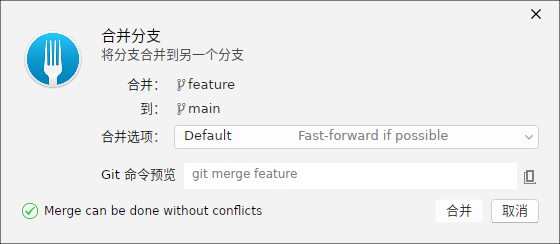
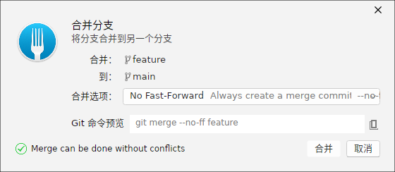
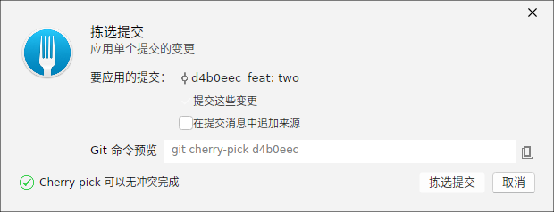
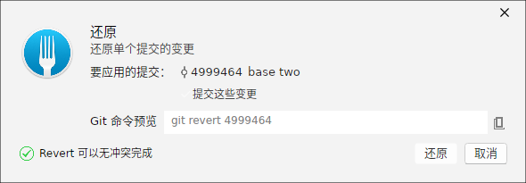
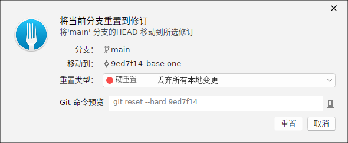
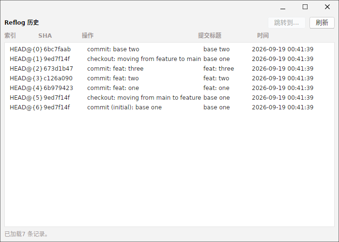
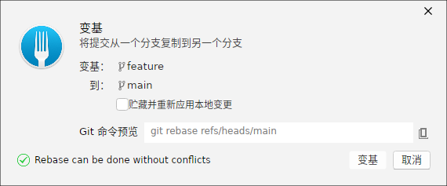
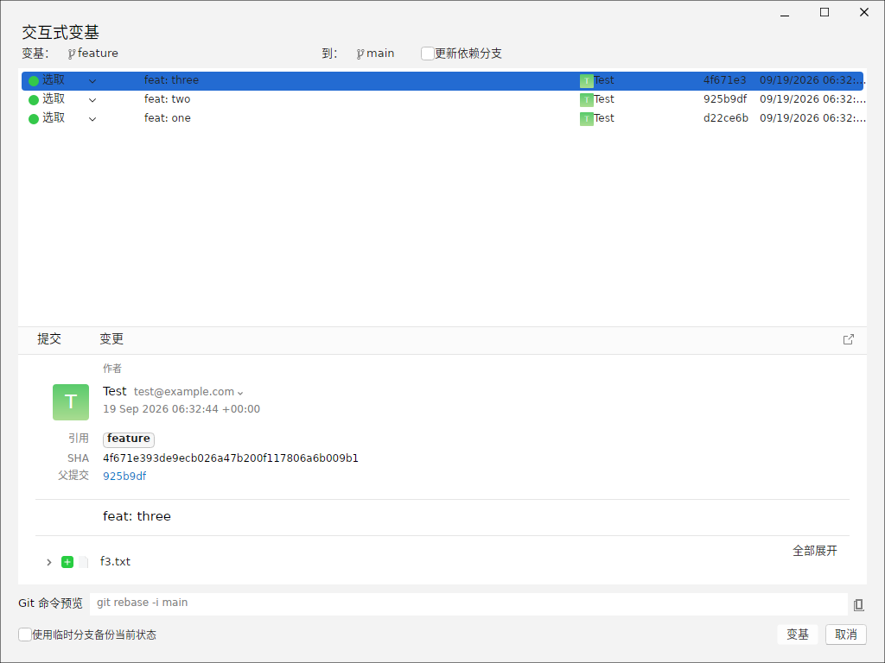
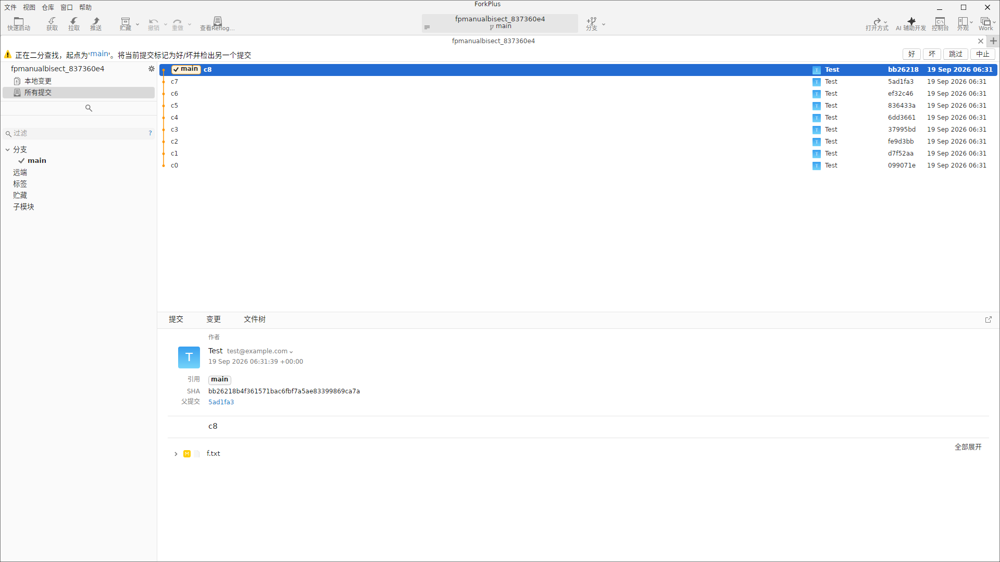

合并分支（Merge）
在「合并分支」对话框中，选择要将当前分支合并进来的来源分支。默认生成直接的合并命令，也可切换为 No Fast-Forward（--no-ff），以便在历史上保留一条合并提交。

切换到「No Fast-Forward」后，命令变为带 --no-ff 的合并，即使来源可快进也会创建一条显式合并提交。

拣选提交（Cherry-Pick）
「拣选提交」对话框把指定的提交应用到当前分支。界面中列出了来源分支上的提交以及与当前 HEAD 的关联关系，选定后点击确定执行 git cherry-pick。

还原提交（Revert）
「还原提交」对话框通过一次新的反向提交来撤销过去某个提交的改动，从而保留历史。选定目标提交后，可预览对应的 git revert 命令。

重置分支（Reset）
「重置分支」对话框可将当前分支指针回退到某个提交，并选择重置模式。Soft / Mixed / Hard 三种模式影响工作区与暂存区的保留程度，命令预览会随选择即时变化。

Reflog 历史
Reflog 记录了所有引用（分支、HEAD）的移动历史。即使分支被重置或删除，也能从 Reflog 中找回之前的提交状态，是误操作后的安全网。

变基分支（Rebase）
「变基分支」对话框把当前分支基于另一个分支的顶端重新排列其提交。相对于合并，变基会重写当前分支的提交使历史线性清晰。界面上会预览 git rebase 命令与目标基底。

交互式变基
「交互式变基」窗口列出将在变基中重玩的提交（todo 列表），每行展示该提交的摘要。你可以在此调整提交顺序或标记要操作的提交，ForkPlus 会通过底层进程驱动 git rebase -i 完成改写。

二分查找（Bisect）
当某个回归（bug）出现后，你可以用二分查找（Bisect）在提交历史中快速定位引入问题的那一次提交。ForkPlus 把 git bisect 封装进主界面顶部的通知条：在「仓库」菜单（或修订列表右键、快速启动的「二分查找」命令）中启动二分查找后，通知条即展开为一条可交互的横幅。

通知条按当前检出的提交引导你作出判断：
- 好（Good）：当前提交未引入问题，二分查找将排除该侧并自动检出下一个候选提交。
- 坏（Bad）：当前提交已出现问题，二分查找将向更早的历史继续收敛。
- 跳过（Skip）：当前提交无法参与测试（例如无法编译），将其排除在候选之外。
- 中止（Abort）：调用
git bisect reset，结束本次查找并恢复原先的检出状态。
反复标记「好 / 坏」后，二分查找以对数次数把范围收敛到引入问题的那一条提交上，从而精确定位回归源头。